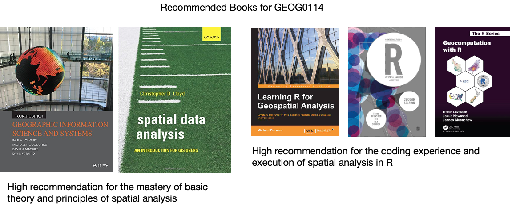

Reading List for GEOG0114 2023/24

Contact me via email (a.musah@ucl.ac.uk) if you are having problems securing one or any of these recommended books from the UCL library or elsewhere.
Week 1: Spatial analysis for data science
- Book: [Theory] Longley, P. et al (2015) Geographic Information Science & Systems (4th Edition); Chapters 2: The Nature of Geographic Data Click link (Note: use of your UCL login via institutional organisation (UK Federation) is required to access the digital book)
- Book: [Theory] Longley, P. et al (2015) Geographic Information Science & Systems (4th Edition); Chapters 3: Representing Geography Click link (Note: use of your UCL login via institutional organisation (UK Federation) is required to access the digital book)
- Book: [R Programming] Brunsdon, C. et al (2018) An Introduction to R for Spatial Analysis and Mapping; Chapter 3: Basics of Handling Spatial Data in R Click link (Note: Books can be borrowed from UCL’s Library)
- Book: [R Programming] Dorman, M. (2014) Learning R for Geospatial Analysis; Chapter 1: The R Environment Click link (Note: Digital book)
- Book: [R Programming] Dorman, M. (2014) Learning R for Geospatial Analysis; Chapter 3: Working with tables Click link (Note: Digital book)
- Paper: [R Programming] Tennekes, M. (2018). tmap: Thematic Maps in R. Journal of Statistical Software, 84(6), 1–39. https://doi.org/10.18637/jss.v084.i06 (Download)
Week 2: Graphical representation of spatial data
- Gitbook: [R Programming] Gimond, M. (2021) Intro to GIS and spatial analysis. Chapter 8: Spatial operations and vector overlays Click link
- Book: [Theory] Longley, P. et al (2015) Geographic Information Science & systems, Chapter 13: Spatial Analysis Click link
- Gitbook: [R Programming] Lovelace, R., Nowosad, J. and Muenchow, J. (2021) Geocomputation with R, Chapter 4: Spatial data operations Click link
- Gitbook: [R Programming] Lovelace, R., Nowosad, J. and Muenchow, J. 2021. Geocomputation with R, Chapter 5: Geometry operations Click link
- Paper: [Research] Bijnens, E. et al (2020). Residential green space and child intelligence and behavior across urban, suburban, and rural areas in Belgium: A longitudinal birth cohort study of twins. PLOS Medicine 17(8), e1003213. Click link
Week 3: Spatial autocorrelation
- Gitbook: [R Programming] Gimond, M. (2021) Intro to GIS and spatial analysis. Chapter 13: Spatial autocorrelation Click link
- Book: [Theory] Longley, P. et al (2015) Geographic Information Science & systems (4th Edition); Chapter 2: The Nature of Geographic Data Click link
- Book: [Theory] Longley, P. et al (2015) Geographic Information Science & systems (4th Edition); Chapter 13: Spatial Analysis Click link
- Paper: [Research] Radil, S. 2016. Spatial analysis of crime. In: Huebner, B. and Bynum, T. The Handbook of Measurement Issues in Criminology and Criminal Justice, Chapter 24, pp.536-554. Click link (Note: use of your UCL login via institutional organisation (UK Federation) is required to access the digital paper)
- Book: [R Programming] Brunsdon, C. et al (2018) An Introduction to R for Spatial Analysis and Mapping; Chapter 7: Spatial Attribute Analysis with R, (See pages 257 to 262) Click link (Note: Books can be borrowed from UCL’s Library)
- Book: [R Programming] Brunsdon, C. et al (2018) An Introduction to R for Spatial Analysis and Mapping; Chapter 8: Localised Spatial Analysis, (See pages 281 to 289) Click link (Note: Books can be borrowed from UCL’s Library)
- Book: [Theory] Lloyd, C.D., et al (2010) Spatial Data Analysis: An Introduction for GIS Users; Chapter 4: Key concepts 3 - Spatial Data Analysis, (See pages 43 to 64)
- Book: [Theory] Lloyd, C.D., et al (2010) Spatial Data Analysis: An Introduction for GIS Users; Chapter 8: Local Univariate Measures, (See section 8.4.1. [Local Spatial Autocorrelation] on pages 110 to 113)
Week 4: Suitability Mapping (Part 1)
- Paper: [Theory] R.W. Saaty (1987). The Analytical Hierarchy Process - What it is and how it is used, Mathl Modelling, Volume 9(3-5), pages 161 to 176 Click link
- Technical Document: [Theory] IDRISI Kilimanjaro: Guide to GIS and Image Processing. Chapter 12: Decision Support - Decision Strategy Analysis, Section on ‘A Typology of Decisions’, pages 151 to 154. Click link
- Paper: [Application] A.A. Ali, A. Ahmad (2019). Spatial susceptibility analysis of vector-borne diseases in KMC using geospatial technique and MCDM approach, Modeling Earth Systems and Environment, Issue 5, pages 1135–1159 Click link
- Paper: [Application] X. Zhao et al., (2020). Malaria Risk Map Using Spatial Multi-Criteria Decision Analysis along Yunnan Border During the Pre-elimination Period, Am J Trop Med Hyg, Volume 103 (2), pages 793–809 Click link
- Paper: [Application] B. Ahmed (2015). Landslide susceptibility mapping using multi-criteria evaluation techniques in Chittagong Metropolitan Area, Bangladesh. Landslides, Issue 12, pages 1077–1095 Click link
- Book: [R Programming] Dorman, M. (2014) Learning R for Geospatial Analysis; Chapter 3: Working with Rasters Click link (Note: Digital book)
Week 5: Suitability Mapping (Part 2)
- Book: [R Programming] Dorman, M. (2014) Learning R for Geospatial Analysis; Chapter 3: Working with Rasters Click link (Note: Digital book)
- Book: [Theory] Stockwell, D. (2019) Niche Modeling: Predictions from Statistical Distributions; Chapter 4: Topology; CRC Press; pages: 45-63.
- Online: [Tutorials] Hijmans, R.J., & Elith, J. (2021) Species distribution modelling Click link
- Online: [Tutorials] Kerkhoff, D. (2016) Ecological Responses to Climate Change: Species Distribution Modelling using Maxent Click link
- Online: [Tutorials] Dennis, M. (2020) Practical 4: Species Distribution Modelling I Click link
- Paper: [Application] Escobar, L.E., (2020). Ecological Niche Modeling: An Introduction for Veterinarians and Epidemiologists, Frontiers in Veterinary Science Click link
- Paper: [Application] Banks, W.E., (2017). The application of ecological niche modeling methods to archaeological data in order to examine culture-environment relationships and cultural trajectories; Quarternaire Click link
- Paper: [Application] Liao, Y., Lei, Y., Ren, Z., Chen, H., & Li., D., (2017). Predicting the potential risk area of illegal vaccine trade in China; Scientific Reports, Issue 7, 3883. Click link
Week 6: Geostatistical Modelling
- Technical Document: [R Programming] Gurpreet Singh and Biju Soman, (2020), Spatial Interpolation using Kriging in R. Download here
- Technical Document: [R Programming] Fernando Antonanzas-Torres, (2014), Geostatistics examples in R: Ordinary Kriging, Universal Kriging and Inverse Distance Weighted. Download here
- Technical Document: [R Programming] Adela Volfova and Martin Smejkal, (2012), Geostatistical Methods in R. Download here
- Book: [R Programming] Roger S. Bivand, Edzer J. Pebesma and Virgilio Gomez-Rubio, (2008), Applied Spatial Data Analysis with R, Chapter 8: Interpolation and Geostatistics, pages 191 to 235.
- Book: [R Programming] Michael Dorman, (2014), Learning R for Geospatial Analysis, Chapter 8: Spatial Interpolation of Point Data, pages 241 to 279. Click link (Note: Digital book)
- Book: [Theory] Christopher D. Lloyd, (2010), Spatial Data Analysis: An Introduction for GIS Users, Chapter 9: Spatial Interpolation (Section 9.7. Ordinary Kriging), pages 140 to 150.
Week 9: Spatial Models (Part 1)
- Paper: [Application] Guangqing Chi and Jun Zhu (2008) Spatial Regression Models for Demographic Analysis, Popul Res Policy Rev, 27:17-42. DOI 10.1007/s11113-007-9051-8
- Book Chapter: [Theory] David Darmofal, (2015), Chapter Six: Spatial Lag and Spatial Error Models (2015). Social Analysis for the Social Sciences. Cambridge Press Gain Access to PDF via Institutional login
- Paper: [Application] Wen-Ching Wang, Yu-Ju Chang & Hsueh-Ching Wang, (2019), An Application of the Spatial Autocorrelation Method on the Change of Real Estate Prices in Taitung City. Int Jour Geo-Information, (8)249, doi:10.3390/ijgi8060249
- Online Tutorial: [R Programming] Reka Solymosi and Juanjo Medina (2022) Crime Mapping in R, Chapter 9: Spatial Regression Models Click link
Week 10: Spatial Models (Part 2)
- Book: [R Programming] Brunsdon, C. et al (2018) An Introduction to R for Spatial Analysis and Mapping; Chapter 7: Spatial Attribute Analysis with R, (See pages 257 to 262) Click link (Note: Books can be borrowed from UCL’s Library)
- Book: [R Programming] Brunsdon, C. et al (2018) An Introduction to R for Spatial Analysis and Mapping; Chapter 8: Localised Spatial Analysis, (See pages 281 to 289) Click link (Note: Books can be borrowed from UCL’s Library)
- Book: [Theory] Lloyd, C.D., et al (2010) Spatial Data Analysis: An Introduction for GIS Users; Chapter 8: Exploring spatial patterning in data values, (See section 8.5.3. [Geographically Weighted Regression] on pages 115 to 123)
- Book: [R Programming] Roger S. Bivand, Edzer J. Pebesma and Virgilio Gomez-Rubio, (2008), Applied Spatial Data Analysis with R; Chapter 10: Modelling of Areal Data, (See section 10.5.3. [Geographically Weighted Regression] on pages 305 to 309)
- Paper [Theory] Comber, A. et al (2022) A Route Map for Successful Application of Geographically Weighted Regression; Geographical Analysis; https://doi.org/10.1111/gean.12316 Click link